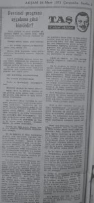

Ek-6
Çetin Altan'ın 12 Mart döneminde Akşam'daki yazıları

14 Mart 1971
"Ve Şahmerdan güm diye indi sonunda"
Aklıma Demirel'in daha işe başlarken savurduğu, orduya karşı iki yüz bin kişiyi silahlandırma kuru sıkısı geliyor. O zaman tanıdıklara:
Sonunda asarlar bu komisyoncuyu, demiştim.
Asılmaktan beter şekilde gitti. Bir Başbakan gibi değil, bir Başbakan gölgesi gibi de değil, ayak sesi duymuş bir kalpazan çırağı gibi gitti.
(.....)
Şimdi ilk uykusuz geçirdikleri gecenin çentiğini çizmektedirler yattıkları odaların duvarlarına. Acaba bizden de yaptıklarımızın hesabını soran çıkar mı diye.
Bir yeni dönem başlamaktadır Türkiye'de.
Anayasa mutlak şekilde uygulanacaktır. Bilimsellik ve bilimsel olmak zorunda bulunan kalkınma reformlarının plan ve analizleri, soytarılık, demagoji ve şantajla ört bas edilemiyecektir. Çünkü artık ikinci bir yozlaşmaya asla ve asla tahammülü yoktur Türkiye'nin.
15 Mart 1971
"Demokrasinin sahte aşıkları, yıkılın..."
Ve zinde güçlerin ne istedikleri Hava Kuvvetleri Komutanı Orgeneral Batur'un daha önce Cumhurbaşkanlığına verdiği muhtırada açıklanmıştır. Ve bu muhtıranın Kara Kuvvetleri Komutanı Orgeneral Gürler ile Deniz Kuvvetleri Komutanı Oramiral Eyicioğlu tarafından da onaylandıkları kendi açıklamalarıyla gazete sütunlarında belgelenmiştir.
(.....)
Zinde güçler eğer Anayasanın bazı maddelerinin değiştirilmesini isteyeceklerse, bu istekler mevcut Anayasanın öngördüğü reformların daha sağlam şekilde uygulanması için olacaktır.
16 Mart 1971
"Halkın tutsak olduğu demokrasi"
.....Şimdi ise tıpkı 27 Mayıs'dan sonra olduğu gibi bütün soygunlar ve soytarılar takımı devrimci ve zinde güçlere acaba yine nasıl madik atarız diye kafa kafaya vermiş bin bir plan hazırlamaktadırlar.
Bunu iyi görmek, ona göre davranmak ve özellikle asla zaman kaybetmemek gerekmektedir. Hele hele olmayan demokrasiyi savunma numaralarına hiç mi hiç yatmamak şarttır. Çünkü tuzağın en püf tarafı orasıdır.
17 Mart 1971
"Niyetler ve metodlar"
[CHP Genel Başkanı] ille de seçimlere gidelim, diyor.
Bu kez de seçim kampanyası adı altında orduya sövdürecek, ortalığı büsbütün karıştırıp kendisine karşı çıkılmasının intikamını alacak. (...)
Ordu temsilcileri herhalde bütün bu oyunların hesabını yapmakta ve politikacıların kendilerine hazırladıkları tuzakları görmektedirler.
(.....)
Yeni bir dönemin yeni bir dinamizmle sağlam temeller üstüne oturması için önce Parlamentonun kendi kendisini feshetmesi şarttır.
Ondan sonra yapılacak iş Parlamento dışı muhalefeti, emekçileri, memurları ve ordusu ise devrimci bir program etrafında örgütleyip, bu örgütten gelecek aynı programa inanmış kişilerle Orgeneral Batur'un da önerdiği gibi devrimci bir Meclis kurmaktır.
18 Mart 1971
"Yüz surat Hacı Murat"
Ordu, iktidar kadar parlamentoyu da suçluyor. Demirel kadar CHP Genel Başkanını da suçluyor. Kalk da bana akıl öğret demiyor onlara. "Sen Anayasanın öngördüğü reformları tahakkuk ettiremedin, Türkiye Cumhuriyetinin geleceğini ağır bir tehlike içine düşürdün" diyor.
Politikacılara vız geliyor bu suçlama... Onlar da arkalarına dönüp hangi anlama geldiği pek anlaşılmıyan kendi buldukları yuvarlak klişe deyimle "Aşırı akımları" suçluyor ve aynı zamanda demokrasinin devamını istiyorlar.
Her işine gelmiyen şeyi "Aşırı akım" diye suçlayıp sonra da demokrasi aşığı görünme. Bu da Türkiye'de rastlanabilecek türden bir gariplik rekoru...
(.....)
Şimdi akılları fikirleri Orduyu bölüp birbirine düşürmek, zaman kazanmak ve onu bunu suçlıya suçlıya eski oyuna yine devam etmek...
Başarıya ulaşmazlar diye temenni edelim, ama en usta oldukları iş de budur onların...
19 Mart 1971
"Fasulya gazı reformu"
... Üstelik CHP zorla hükümete geçmiş duruma düşecektir, aşınacaktır. AP, bunu gayet iyi kullanacaktır. Orduya her fırsatta sövülüp sayılacaktır. CHP örgütü kimsenin yüzüne bakamayacak duruma gelecektir. Zaten asıl amaç, içinde ne de olsa devrimci atılımlar bulunan CHP örgütünü bir kez daha iğdiş ettikten sonra, orduyu da büsbütün prestijsiz duruma düşürmektir. Bazı önemli kişiler yıllardan beri bunun için görevlendirilmişlerdir. Ve bu görevlerini başarıyla yürütmektedirler.
20 Mart 1971
"Nihat Erim"
[Nihat Erim'in] bu krizli devirde geniş dünya görüşü, temel sorunların bilinci içinde olması ve sağlam bir hukuk kültüründen gelmesi biz radikal dönüşümlere inanmış devrimcileri, herhalde ciğerimize oturacak acı hayal kırıklıklarına uğratmayacaktır.
24 Mart 1971
"Devrimci program uygulama gücü kimdedir?
Bir de bakıyoruz ki bizim inandığımız programı ordu temsilcileri Orgeneral Batur'un imzasıyla bir muhtıra halinde Cumhurbaşkanı'na vermişler. Demek ki aynı programda birleştiklerine göre ordu da devrimcilerin müttefiki... Bu güçlü müttefike sırt çevirerek bizim programı hiçbir zaman uygulamasına imkân bulunmıyan tutucu parlamentodan yana artık hiç olamam. Ve devrimciliğin yeni bir bütünleşmede, yeni bir oluşuma dönüşte olduğunu görerek hemen tavrımı tesbit ederim.
(.....)
Gayet açık söylüyoruz, biz bizim inandığımız programın daha ilk harfini görünce delilik krizleri geçiren feodal gölgeli parlamentoyu değil, Orgeneral Batur'un imzasını taşıyan muhtırayı ve onu destekleyip benimsiyen güçleri tutuyoruz.
(.....)
Vaktiyle bizi yok etmiye kalkanları mı savunacağız şimdi, yoksa bu geri ve tutucu kurumu silip yerine devrimci bir kurumu kurmak istidadını gösteren devrimci kuvvetleri mi tutucağız?